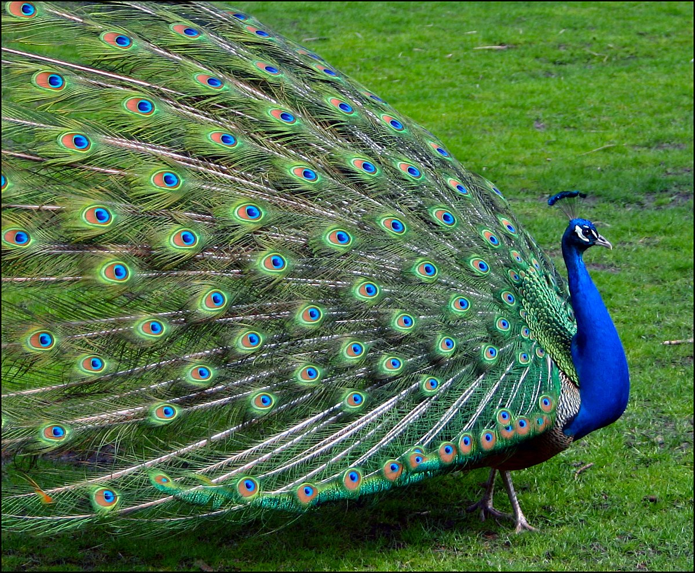

Meus projetos

A história do pavão
Este site é para entender a vida dos pavões, sua história, seu tratamento, sua forma de viver.
A história do pavão
Este site é para entender a vida dos pavões, sua história.
A história do pavão
Este site é para entender a vida dos pavões, sua história .